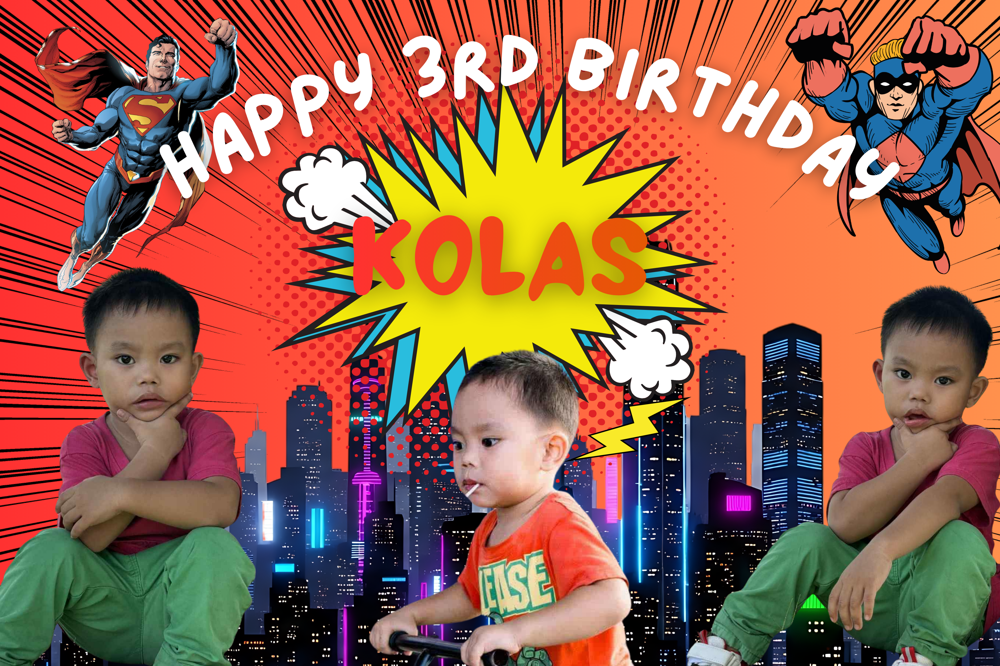
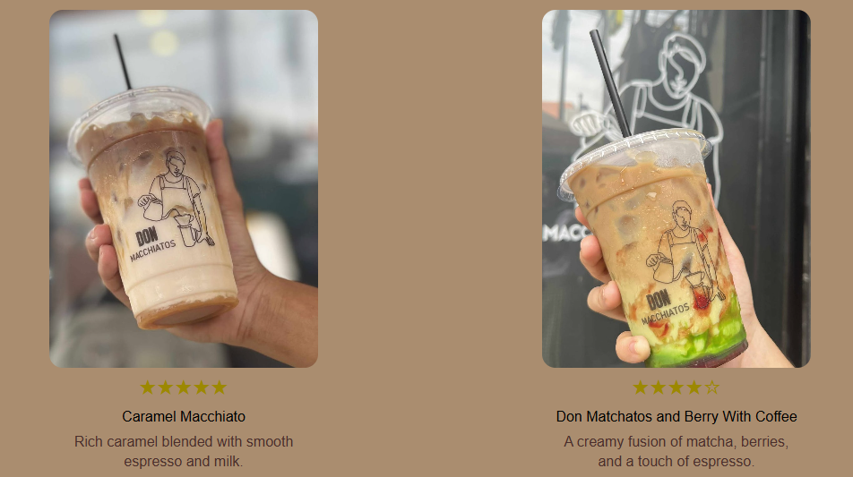

Selected work & experiments.
A snapshot of what I love creating.

Beginner Design
Output Projects
A collection of first-year college projects created using Adobe photoshop, aimed at strengthening foundational skills in design and illustration through hands-on practice and academic activities.
Cohesive illustrations & Beginner Layouts

Print Design
Birthday Tarpaulin Design
Designed a personalized birthday tarpaulin using Canva, incorporating custom layouts, typography, color schemes, and celebratory graphics based on client preferences.
Event visibility

Web Design
Featuring Coffee Shops
Designed and developed a website for promoting and advertising coffee shops, featuring business information, product highlights, location details, and an engaging user interface to attract potential customers.
Responsive, professional layout
The projects showcased above represent only a portion of my work, with many additional projects completed throughout my academic and personal development.